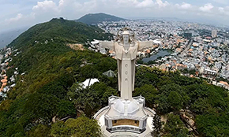
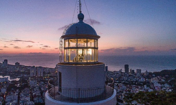

The Statue of Christ, also known as the Statue of God with Open Arms. It is one of the famous Vung Tau attractions that many tourists visit. Located on the top of Small mountain, Vung Tau city, the statue was built in 1974. Christ statue has a height of 32m, an arm span of 18.3m standing on a height of 170m, with a beautiful sea view, inside is 133 steps up to 2 hands of the statue. Standing here, visitors can zoom into the distance, admire the vast landscape.
The statue of Christ can be considered as a version with a similarity to the 2m tall Christ Statue in the Brazilian city of Rio de Janeiro – one of the largest statues in Asia.
Vung Tau Lighthouse is considered the oldest among 79 lighthouses in Vietnam and is a symbol of Vung Tau city. France built this site in 1862 to signal and guide ships passing. The best time for visitors to visit Vung Tau lighthouse is in the afternoon at about 14:00 to 17:00. Because the sun is light, the light is just right combined to create sparkling and magical pictures for young people. Watch the coastal city at night on Vung Tau lighthouse: tourists often choose to go up to the lighthouse to see the whole city of Vung Tau in the sparkling night to enjoy a cup of coffee.
Con Dao is the name of an offshore archipelago in Ba Ria-Vung Tau province. About 97 nautical miles from Vung Tau and 45 nautical miles from Hau river. Con Dao or Con Son is also used for the name of the largest island in this archipelago.
The time from Tet to the end of summer, from March to the end of September is the best time to travel to Con Dao. From October to February. Although the waters of Con Dao often have big waves, since this time is the dry season. There is always a fair amount of sunshine and it is also worth visiting Con Dao.